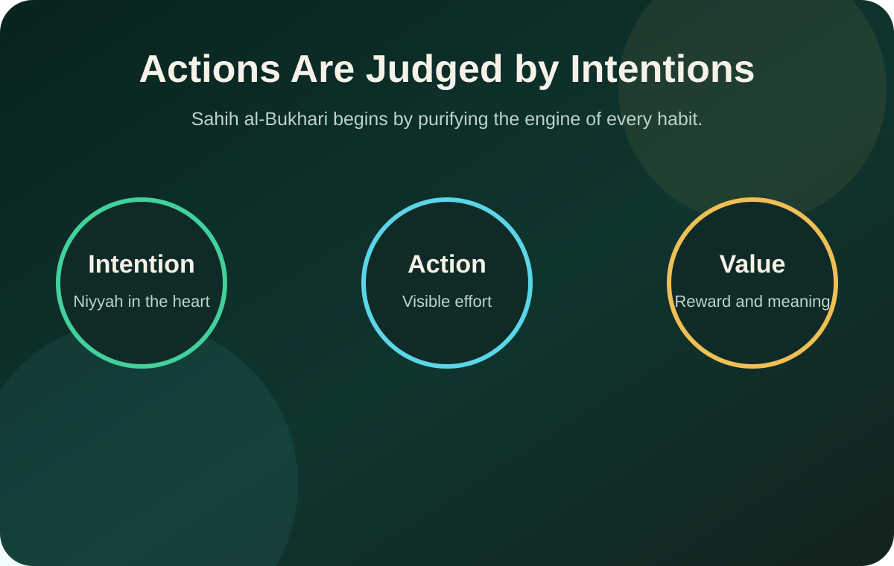
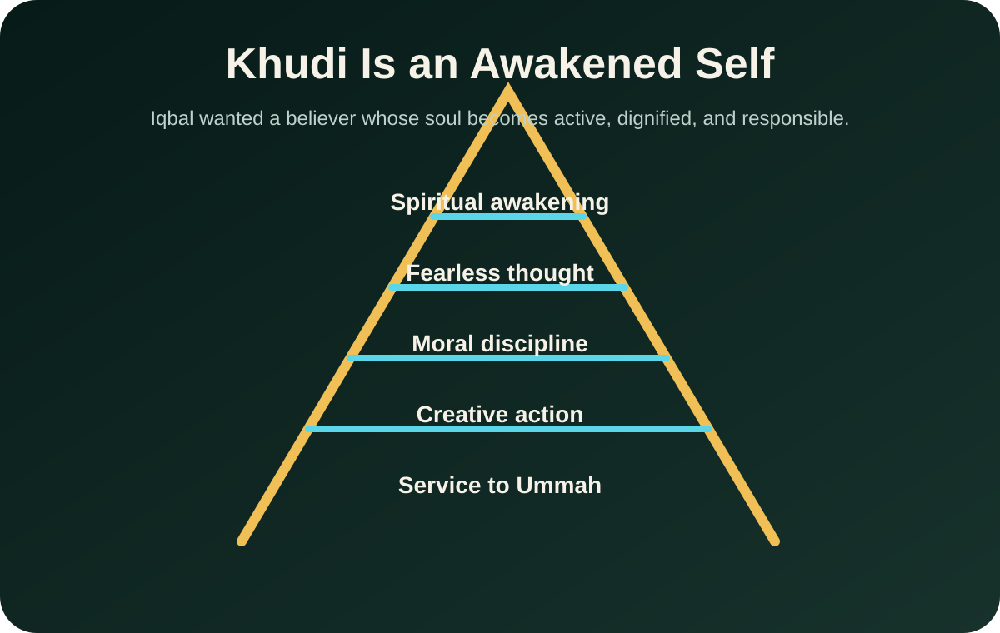
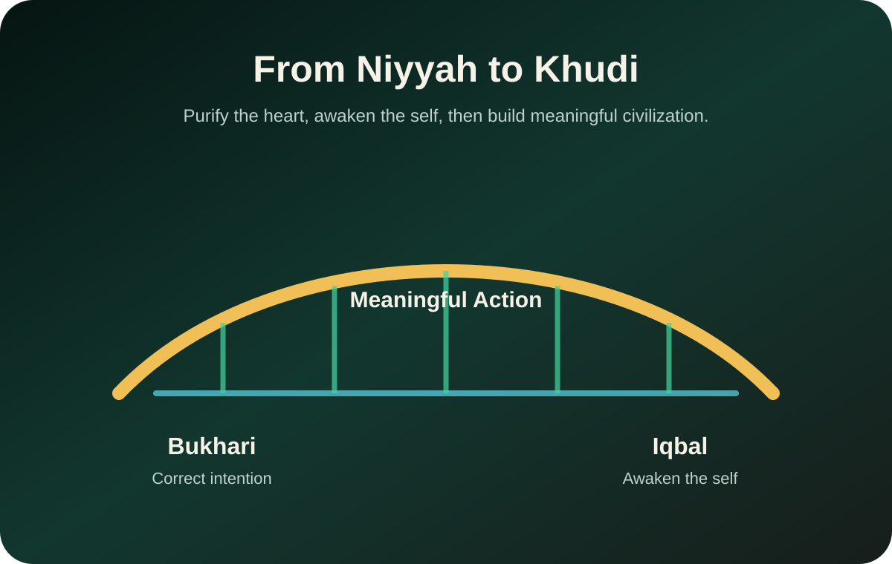

Knowledge + Selfhood • May 20, 2026
Intention, Khudi, and Muslim Awakening
A bilingual reflection on Sahih al-Bukhari's opening hadith and Allama Iqbal's call to awaken the believing self.
إِنَّمَا الأَعْمَالُ بِالنِّيَّاتِ
Actions are judged by intentions.
Sahih al-Bukhari, narrated by Umar ibn al-Khattab (RA)

Part 1
Al-Bukhari's first chapter: the beginning of revelation
English
Imam Muhammad al-Bukhari begins his collection with the chapter "The Beginning of Revelation" and places the hadith of intention at the entrance. This is not only a legal principle. It is a spiritual architecture. Before the body moves, the heart must know why it is moving.
Two people may give charity, study knowledge, lead a community, or build a project. The outward form can look identical. But with Allah, the inner purpose changes the spiritual weight of the action.
বাংলা
ইমাম মুহাম্মাদ আল-বুখারী তাঁর সংকলন শুরু করেন "ওহীর সূচনা" অধ্যায় দিয়ে, এবং প্রবেশদ্বারে রাখেন নিয়তের হাদিস। এটি শুধু একটি ফিকহী নীতি নয়; এটি আধ্যাত্মিক স্থাপত্য। শরীর কাজ করার আগে হৃদয়কে জানতে হয়, কেন সে কাজ করছে।
দুই ব্যক্তি দান করতে পারে, জ্ঞান অর্জন করতে পারে, সমাজকে নেতৃত্ব দিতে পারে বা একটি প্রকল্প তৈরি করতে পারে। বাহ্যিক রূপ একই দেখাতে পারে। কিন্তু আল্লাহর কাছে অন্তরের উদ্দেশ্যই কাজের আধ্যাত্মিক ওজন বদলে দেয়।
One action, two intentions
Part 2
Allama Iqbal and the meaning of Khudi
English
Muhammad Iqbal believed that Muslims did not only lose political strength; they lost inner awakening. His word "Khudi" points to the God-given dignity, courage, creativity, and moral responsibility placed inside the human being.
Khudi is not arrogance. It is not selfishness. It is the disciplined awakening of a servant who knows that Allah created him or her for worship, trust, knowledge, service, and meaningful action.
বাংলা
মুহাম্মাদ ইকবাল মনে করতেন, মুসলিমরা শুধু রাজনৈতিক শক্তি হারায়নি; তারা হারিয়েছে অন্তরের জাগরণ। তাঁর "খুদী" শব্দটি মানুষের ভেতরে রাখা আল্লাহপ্রদত্ত মর্যাদা, সাহস, সৃষ্টিশীলতা এবং নৈতিক দায়িত্বকে নির্দেশ করে।
খুদী অহংকার নয়। এটি স্বার্থপরতা নয়। এটি এমন এক বান্দার শৃঙ্খলিত আত্মজাগরণ, যে জানে আল্লাহ তাকে ইবাদত, আমানত, জ্ঞান, সেবা এবং অর্থবহ কাজের জন্য সৃষ্টি করেছেন।

What Iqbal wanted to heal
Laziness / অলসতা
When the self sleeps, faith becomes a memory instead of a living force.
Blind imitation / অন্ধ অনুকরণ
Iqbal wanted Muslims to inherit tradition with intelligence, not copy without thought.
Passive spirituality / নিষ্ক্রিয় আধ্যাত্মিকতা
Real spirituality should produce prayer, character, knowledge, work, and service.
Mental slavery / মানসিক দাসত্ব
A believer should not feel inferior when Allah has honored the children of Adam.
Part 3
The bridge between Bukhari and Iqbal
English
Bukhari teaches: purify the intention. Iqbal teaches: awaken the self. Together they form a complete habit model. The believer should not act with a corrupt heart, and should not keep a pure heart passive and asleep.
The first step is sincerity. The second step is awakened action. A Muslim civilization needs both: hearts that seek Allah and minds that build with courage.
বাংলা
বুখারী শেখান: নিয়তকে শুদ্ধ করো। ইকবাল শেখান: আত্মশক্তিকে জাগাও। একসাথে তারা একটি পূর্ণাঙ্গ অভ্যাস মডেল তৈরি করেন। মুমিন যেন কলুষিত হৃদয় নিয়ে কাজ না করে, আবার পবিত্র হৃদয়কে নিষ্ক্রিয় ও ঘুমন্তও না রাখে।
প্রথম ধাপ ইখলাস। দ্বিতীয় ধাপ জাগ্রত কর্ম। মুসলিম সভ্যতার জন্য দুটিই প্রয়োজন: এমন হৃদয় যা আল্লাহকে চায়, এবং এমন মন যা সাহসের সাথে নির্মাণ করে।

Final essence / চূড়ান্ত সারাংশ
বিশুদ্ধ নিয়ত Awakened soul
জাগ্রত আত্মা Fearless character
নির্ভীক চরিত্র Meaningful action
অর্থবহ কর্ম
Practice today
- Before one major task today, pause for ten seconds and correct your niyyah.
- Write one sentence: "I am doing this for Allah, with honesty and service."
- Choose one small action that wakes up your Khudi: study, Salah on time, helping family, or building something beneficial.
Recommended reading
Islamic Habits articles are practical reminders for habit building. For detailed hadith, fiqh, or literary study, consult qualified scholars and reliable editions.